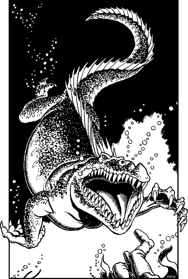

243
The shock of the unexpected blow knocks the air from your lungs and somersaults you down into the water. You draw upon your Kai skills to numb your pain and gather your senses and, as your vision clears, you discover that you are still in one piece. However, the satchel containing the Moonstone is no longer slung around your shoulder. The strap has broken and you glimpse the bag sinking towards a coral reef, five fathoms below. Suddenly you sense movement in the water and you twist around. Speeding towards you comes a marine monster; it is returning after having rammed you in the back. It resembles a gigantic crocodile, but one with a blunt-muzzled head and scales of dull grey horn. As it closes for the kill its great jaw swings open revealing a ghastly red maw lined with dozens of dagger-like fangs.

If you wish to try to reach the surface and fill your empty lungs with fresh air, turn to 166.
If you decide to unsheathe your Kai Weapon and prepare to defend yourself from this creature’s attack, turn to 67.